Materials
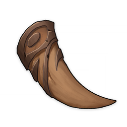Boreal Wolf's Milk Tooth
Boreal Wolf's Milk Tooth
Trophies
2★
Weapon Ascension Material
Weapon Ascension Material.
Andrius' wolf pack is its blessed honor guard, and even the milk teeth of a wolf cub possess great potential.
In the past, the gods had the responsibility to love all people. Andrius was therefore quite unusual in that he became leader of the wolves, while only welcoming abandoned babies and wanderers when it came to humans.
Sources:
Purchase from the Souvenir Shop in Mondstadt
Domain of Forgery: Submerged Valley (Tuesday/Friday/Sunday)
Used by weapon ascensions:


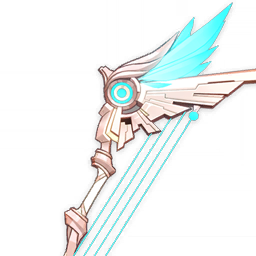
Skyward Harp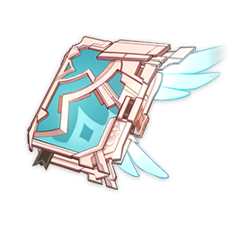
Skyward Atlas


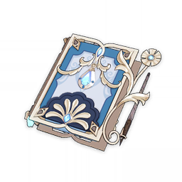
Ballad of the Boundless Blue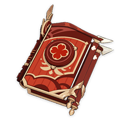
Dodoco Tales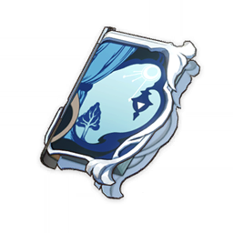
The Widsith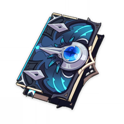
Wine and Song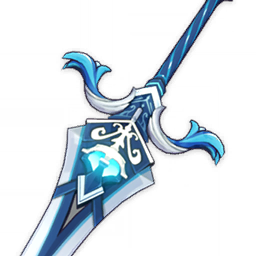
Sacrificial Greatsword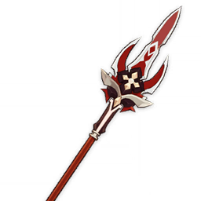
Deathmatch


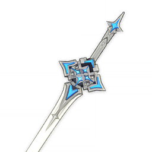
Sword of Descension


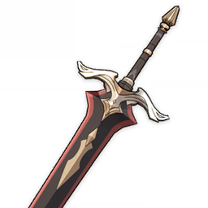
Bloodtainted Greatsword
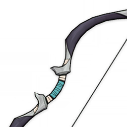
Seasoned Hunter's Bow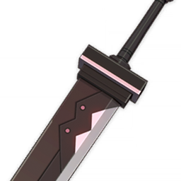
Old Merc's Pal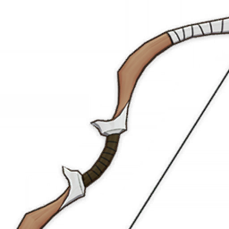
Hunter's Bow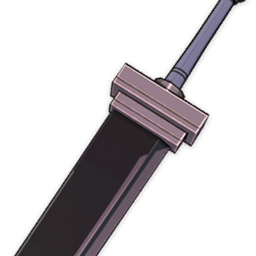
Waster Greatsword